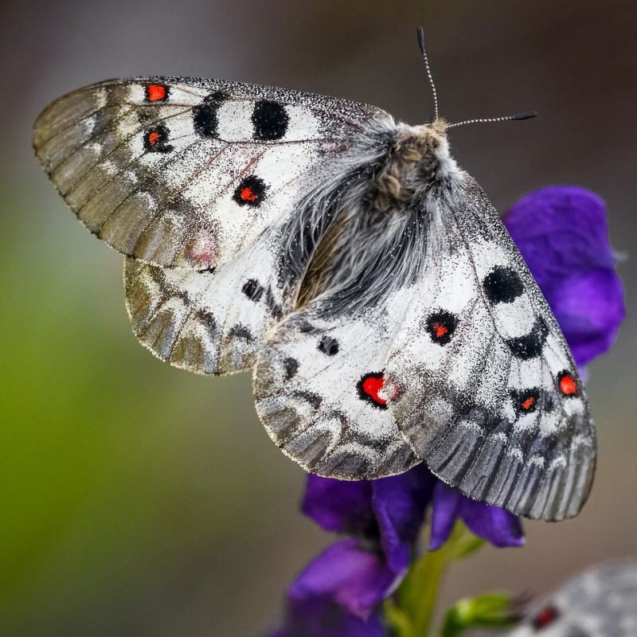

Parnassius phoebus
- Common name
- Phoebus Apollo
- Family
- Papilionidae
- Family common name
- Swallowtails and Parnassians
- On the wing
- June - September
One generation
- Habitat
- Mountains at 1,600 to 2,800 meters, in particular between 1,800 and 2,200 meters above sea level, in humid damp and wet places such as edges of mountain streams and near springs and fresh seepages and in valleys (Schneetälchen) according to the preferences of its caterpillar food plant.
- Larval host:
- Saxifraga species, Sedum species, Sempervivum montanum
Range Map
Seasonality